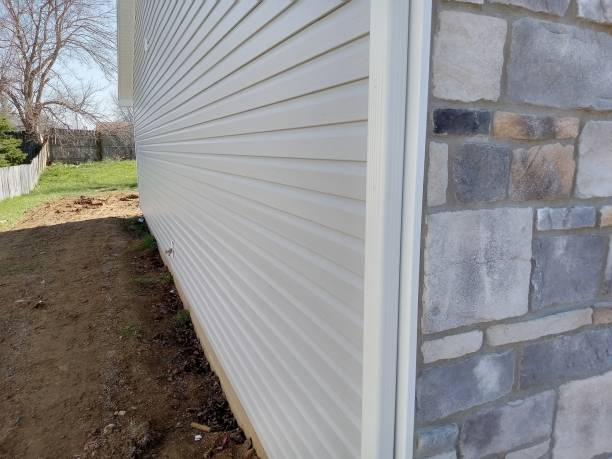

Burwell Nebraska
info@bestroofingandsiding.pro
Burwell Nebraska
info@bestroofingandsiding.pro

Choose expert siding installation in Burwell Nebraska to upgrade your home’s appearance and energy efficiency. Our siding solutions are designed for durability and exceptional performance against weather in Burwell Nebraska .
Click Here To Call Us (877) 848-1711When it comes to enhancing the curb appeal and energy efficiency of your home in Burwell Nebraska siding is your trusted siding expert. We specialize in providing high-quality siding installation, repair, and replacement services tailored to meet the unique needs of homeowners in Burwell Nebraska and surrounding areas.
Our team of experienced professionals uses only top-tier materials to ensure durability and protection against the elements. Whether you’re looking for traditional vinyl siding, modern fiber cement, or custom wood finishes, we have a wide range of options to suit your style and budget.
By choosing siding, you are investing in long-lasting solutions that increase the value of your home while improving insulation, reducing maintenance, and protecting your property from moisture and pests. Our siding options not only add beauty but also significantly enhance your home’s energy efficiency, saving you money on energy bills in the long run.
We take pride in delivering exceptional customer service, timely project completion, and competitive pricing. Our team works closely with you to understand your preferences and offer personalized recommendations, ensuring a smooth and hassle-free experience from start to finish.
For all your siding needs in Burwell Nebraska trust the experts at siding. Contact us today for a free consultation and discover why we are the preferred choice for siding services in Burwell Nebraska !
Residential & commercial siding
Quality services at affordable prices
Immediate 24/ 7 emergency services


When choosing the right siding materials for your home in Burwell Nebraska it's crucial to consider the unique climate challenges of the area. Burwell Nebraska experiences a mix of high humidity, intense sun, and frequent storms, so selecting durable and weather-resistant siding is essential for long-lasting protection. Here are the top siding materials that stand up to these tough conditions:
Fiber Cement Siding: Fiber cement is one of the most durable and weather-resistant materials for Burwell Nebraska homes. It can withstand high heat, heavy rain, and humidity without warping or rotting. Plus, it requires minimal maintenance, making it ideal for homeowners looking for longevity and ease of care.
Vinyl Siding: Vinyl siding is a popular choice in Burwell Nebraska due to its ability to resist moisture and mold. It's a cost-effective option that provides good insulation, ensuring that your home stays energy-efficient despite the heat.
Metal Siding: For those seeking a sleek, modern aesthetic, metal siding is a great option. It's resistant to both rust and fading, which is important in a humid, sunny environment like Burwell Nebraska . Metal siding also provides superior protection against storm damage.
Wood Siding: If you prefer a natural look, treated wood siding can work well in Burwell Nebraska as long as it's properly sealed and maintained. Choose wood varieties resistant to moisture and pests for optimal performance in this tropical climate.
By choosing the right siding material, you can ensure that your home in Burwell Nebraska stays protected from the elements while maintaining its aesthetic appeal.
Residential & commercial siding
Quality services at affordable prices
Immediate 24/ 7 emergency services
Wood siding installation services is a great option for homeowners looking to achieve a classic and timeless look for their homes. Our company specializes in all aspects of wood siding installation, ensuring that your home not only looks beautiful but is also well-protected against the elements.
Wood siding offers exceptional aesthetic appeal, and with proper installation and maintenance, it can last for many years. Our experienced installers are skilled in working with various wood types, providing insights into the best options based on your home's architecture and your budget.
Choosing our wood siding installation services means choosing quality craftsmanship and a commitment to customer satisfaction. We take pride in our attention to detail and dedication to delivering a flawless installation that enhances your home’s beauty .

Maintaining your siding is crucial to ensuring its longevity and appearance. Our siding maintenance services are designed to keep your home’s exterior looking pristine and protected from environmental elements.
Regular maintenance helps in identifying any small issues before they escalate into costly repairs. Our services include cleaning, inspections, and minor repairs to ensure your siding stays in top-notch condition. With our team of experts, you can have peace of mind knowing that your home’s siding will last longer and maintain its beauty.

As one of the leading local siding companies we understand the unique needs and preferences of homeowners in your community. Our commitment to quality service, exceptional craftsmanship, and personalized solutions sets us apart from other companies.
We offer a diverse range of siding materials and installation services, ensuring that each project is tailored to the specific requirements of your home. With years of experience in the industry, our knowledgeable team is always ready to provide insights and recommendations to help you make informed decisions.
Choosing a local siding company means supporting your community while receiving personalized service. We take pride in being a trusted name for siding solutions dedicated to enhancing the beauty and durability of your home.

Eco-friendly siding installation in Burwell Nebraska is becoming increasingly important for environmentally-conscious homeowners. Our company is at the forefront of providing sustainable siding solutions that not only enhance your home’s exterior but also minimize environmental impact.
We offer a variety of eco-friendly siding materials, including those made from recycled content or sustainably sourced resources. Our team is skilled in installing these materials effectively, ensuring your home receives the protection and appearance you desire while being kind to the environment.
By choosing our eco-friendly siding installation services, you’re making a responsible choice for your home and our planet. We are committed to delivering quality service and sustainable solutions that enhance your property .

Aluminum siding is an excellent choice for homeowners seeking a durable and low-maintenance option. Our aluminum siding installation services in Burwell Nebraska are designed to provide you with a long-lasting solution that enhances your home’s curb appeal without the hassle of frequent maintenance.
Aluminum siding is resistant to rust, rot, and insect damage, making it a smart investment for any property. Our team is experienced in aluminum siding installation, ensuring a perfect fit that enhances your home’s beauty and functionality.
We offer a variety of colors and finishes, allowing you to customize the look of your home to match your style. Experience the benefits of aluminum siding with our professional installation services — contact us for an estimate today!
When investing in siding for your home, knowing that your work is protected by a warranty is paramount. Our siding contractors with warranties in Burwell Nebraska provide you with peace of mind, ensuring that your investment is safeguarded.
We stand behind our work, which is why we offer comprehensive warranties for both materials and labor on all our siding projects. Our commitment to quality means that we only use top-tier products that come with manufacturer warranties, enhancing your protection.
Choosing our company means choosing reliability; we pride ourselves on our reputation for excellent service and long-lasting installations. Don't compromise — choose siding contractors you can trust and contact us today for your project!

Whether you're looking to install new siding or repair existing damage, our siding installation and repair services have you covered. With a highly trained team that specializes in both areas, we ensure that your home is well-equipped to handle the elements.
Our comprehensive approach means we can tackle any siding project, from full installations to minor repairs. We use high-quality materials and proven techniques to guarantee that our work meets the highest standards.
Rest assured that we’ll work with you every step of the way to make the process as smooth as possible. Restore your home’s beauty and structural integrity with our siding installation and repair services — contact us today!

Your home’s exterior deserves the best, and our house siding installation services offer a range of beautiful and durable options to enhance its value and curb appeal. We work with you to select the right materials and design, ensuring that your vision becomes a reality.
Our team focuses on precision and quality craftsmanship, ensuring every installation is completed to the highest standards. We are dedicated to transforming your home’s exterior into a stunning showcase that not only protects but also elevates its overall aesthetic. Partner with us for professional privacy and impeccable results.
Years Experience
Expert Technicians
Satisfied Clients
Compleate Projects
At Best Roofing and Siding, we specialize in delivering top-quality siding solutions across Burwell Nebraska ensuring your home is protected, stylish, and energy-efficient. With years of experience, we’ve built a reputation for excellence by offering durable, aesthetically appealing siding that enhances curb appeal and withstands the test of time.
We understand that your home is your most valuable asset. That's why we only use premium materials and work with skilled professionals to guarantee that every project is done right the first time. Whether you need vinyl, wood, or fiber cement siding, we offer a range of options to meet your specific needs and budget. Our team is dedicated to helping you choose the perfect siding that suits your home’s design, climate, and energy efficiency goals.
Our commitment to customer satisfaction sets us apart. We pride ourselves on transparent communication, competitive pricing, and timely project completion. Our experts will guide you through the process, ensuring minimal disruption to your daily routine.
In addition to enhancing your home's aesthetic, our siding options offer superior insulation, helping you save on energy costs throughout the year. With Best Roofing and Siding, you can rest assured knowing that your home is protected by the best materials and craftsmanship available in Burwell Nebraska .
Choose Best Roofing and Siding for exceptional service, quality, and value that lasts. Contact us today for a free consultation and let us help transform your home.
When it comes to enhancing the exterior of your home or business, finding reliable siding contractors near you in Burwell Nebraska can orchestrate the perfect marriage between aesthetic appeal and protection against the elements. Our dedicated team of siding experts stands ready to consult, plan, and execute with precision. With years of experience in the industry, we understand the nuances of different siding materials, styles, and installation techniques. Choose us for our commitment to quality, customer satisfaction, and a comprehensive approach that considers your budget and design vision.
Our siding contractors take pride in offering a tailored service, ensuring that your needs and preferences take center stage. Not only do we provide impeccable craftsmanship, but we also value open communication to keep you informed throughout the process. With our team, you’ll experience timely project completion, minimal disruption, and beautiful results that elevate your property’s curb appeal.
Selecting the best siding company is essential for ensuring the longevity and durability of your home’s exterior. With so many options available, it can be overwhelming. However, our company ranks among the best siding companies near me . We pride ourselves on our outstanding reputation and large portfolio of successful projects.
Our team comprises experienced professionals who understand the intricacies of siding installation and repair. We take pride in providing the best customer service, ensuring your project is completed on time and exceeds your expectations. The quality of our materials and craftsmanship speaks for itself, making us the top choice for homeowners and businesses alike .
Vinyl siding has become one of the most popular choices for homeowners in Burwell Nebraska due to its durability, aesthetic appeal, and low maintenance requirements. Our vinyl siding installation services are second to none, thanks to our experienced team and high-quality materials.
When you choose us for your vinyl siding installation, you can expect meticulous craftsmanship that guarantees a perfect fit and finish. Our vinyl siding is available in a variety of colors and textures, allowing you to customize the look of your home. Energy efficiency is also a key benefit of our vinyl siding; it can significantly reduce your heating and cooling costs, making your home more comfortable year-round.
Moreover, our company stands out by ensuring that all installations adhere to local building codes and regulations . We work closely with our clients to ensure their vision for their home becomes a reality. Choose us for your vinyl siding installation, and enjoy a combination of quality, beauty, and innovation!
Many homeowners believe that quality siding comes at a premium price, but that is not the case with our affordable siding installation services . We believe that everyone deserves a beautiful and durable home without breaking the bank. Our competitive pricing, along with our dedication to quality, makes us the go-to choice for budget-conscious homeowners.
We offer a range of siding materials to fit every budget, ensuring that you can find the right option for your needs. Our experienced team works diligently to deliver results that you will love, all while keeping costs transparent and manageable. Trust us to provide an affordable solution that doesn’t compromise on quality or aesthetics.
When it comes to siding repair services our company is your best choice. Siding, being the first line of defense against weather elements, can sometimes suffer from damage due to wear and tear, pests, or storms. Our dedicated team of professionals is skilled in diagnosing and repairing all types of siding to restore your home’s protective barrier.
We offer prompt and efficient repair services to minimize damage and maintain the integrity of your home’s exterior. Our technicians are trained to handle various materials, including vinyl, wood, and fiber cement, ensuring that we can provide the necessary repairs to suit your specific needs.
Timely repairs can often prevent further damage and costly replacements down the line. By focusing on quality workmanship and customer satisfaction, we ensure that your siding remains in excellent condition. If you’re in need of siding repair services don’t hesitate to reach out to us for an evaluation and a free estimate. We are here to help protect your investment.
Investing in residential siding installation is one of the best improvements you can make as a homeowner. At our company, we cater to homeowners in Burwell Nebraska by providing customized siding solutions that match your personal style and meet your practical needs. Our team’s breadth of experience ensures you will receive the highest quality service and advice on the best materials suitable for your home.
Every residential siding installation project begins with a consultation to understand your design preferences, energy efficiency goals, and budget. We install a variety of siding materials, including vinyl, wood, and fiber cement, ensuring that you have various choices for your home. Our skilled technicians execute the installation process with precision, ensuring your siding not only enhances your property’s beauty but also offers excellent insulation and weather resistance.
For local businesses, the choice of commercial siding can impact not just appearance but also functionality and energy efficiency. Our experienced commercial siding contractors bring expertise in installation, maintenance, and repair tailored to commercial properties. Recognizing the unique challenges commercial buildings face, our team offers solutions that highlight your business’s visibility while ensuring compliance with building regulations.
We collaborate closely with you to understand your branding and operational needs, ensuring that the siding we install fits not only aesthetically but also architecturally. Our focus on energy-efficient materials can help reduce utility costs, and with our commitment to quality workmanship and customer satisfaction, we guarantee your business represents professionalism and durability through every element of your exterior.
Searching for local siding installers? Look no further. Our team of local experts is dedicated to meeting the unique needs of the community in Burwell Nebraska . We take pride in contributing to the look and feel of residential and commercial spaces in our area.
Our local presence allows us to understand the specific siding requirements dictated by our climate and geography. We approach each project with a personalized touch, ensuring that your home or business stands out in the neighborhood. Selecting us means choosing a community-focused company that prioritizes quality and service.
If your home needs siding replacement, our expert team is here to help. Over time, siding can degrade, fade, or get damaged to the point where replacement becomes necessary. Our siding replacement services are designed to restore your home's exterior and improve its overall look and functionality.
We offer a comprehensive range of siding materials, including vinyl, fiber cement, wood, and aluminum, allowing you to choose the best fit for your aesthetic and functional needs. Our skilled contractors provide detailed consultations to ensure you make an informed decision that adds value to your home.
Additionally, our siding replacement process is efficient and minimally disruptive, providing you with a beautiful new exterior in no time. With our commitment to high-quality workmanship and customer satisfaction, you can trust that your siding replacement needs will be handled with care and professionalism.
When it comes to siding installation cost estimates transparency and accuracy are crucial. Our company prides itself on providing detailed and fair estimates to help you understand the potential costs associated with your siding project. We believe that clear pricing leads to confidence and peace of mind for our clients.
Our skilled team will conduct a thorough assessment of your property and discuss your needs and preferences to deliver an accurate cost estimate tailored to your siding installation. We offer a range of options to suit different budgets, ensuring that you find the perfect siding solution without unexpected financial surprises.
Our commitment to quality craftsmanship and customer satisfaction means that we won't compromise on our work, no matter the price point. Contact us today for a no-obligation siding installation cost estimate and let us help you enhance your home’s exterior with top-quality siding.
Custom home siding installation in Burwell Nebraska is our specialty. We understand every home tells a story, and the right siding can enhance that narrative. Our company offers tailored siding solutions that reflect your personal style and meet your specific needs. We believe in the creative potential of every home and strive to provide siding that embodies your vision.
Our experienced team works closely with you from the initial design phase to installation, ensuring that every aspect of your home’s exterior capsulates your preferences. We offer a wide array of materials, colors, and styles, allowing you to create a distinctive look for your home.
Choosing us for your custom home siding installation means choosing a partner who values your input and guarantees quality workmanship. We take pride in our attention to detail and customer satisfaction, ensuring your home is not just aesthetically pleasing but well-protected for years to come.
As homeowners become more conscious of energy efficiency and sustainability, energy-efficient siding options are gaining popularity. Our company specializes in offering a variety of energy-efficient siding materials that not only reduce your energy bills but also protect your home against the elements.
Our energy-efficient siding solutions often feature insulation properties that keep your home cooler in the summer and warmer in the winter. By minimizing heat loss, you can reduce your reliance on heating and cooling systems, ultimately contributing to more sustainable living.
Additionally, energy-efficient siding can enhance your home’s overall value and appeal, making it a smart investment. If you want to lower your carbon footprint while enhancing your property, contact us today to learn about our energy-efficient siding options!
Choosing the best siding materials is crucial for your home’s aesthetic and resilience. We offer a comprehensive selection of the best siding materials tailored to the needs of homeowners . From durable vinyl and fiber cement to traditional wood, we help you select the right material that aligns with your visual style and functional requirements.
Our experienced team understands that each siding material has its unique features and benefits. We provide expert guidance on the pros and cons of each option, ensuring you make an informed decision for your home. With our top-quality siding materials and expert installation services, your home will look stunning and stand strong against the elements for years to come.
Siding installation for new construction is a critical step in the building process that can significantly enhance the aesthetic and functional aspects of a property. Our company specializes in providing expert siding installation services tailored for new builds, ensuring that your project runs smoothly and efficiently from start to finish.
Our team is experienced in collaborating with builders and contractors, understanding the specific requirements that come with new constructions. We offer a wide variety of siding materials to choose from, allowing you to create an exterior that meets your architectural vision while providing protection and insulation.
By choosing our siding installation services for your new construction you can expect professionalism, quality craftsmanship, and a commitment to meeting deadlines. We pride ourselves on delivering seamless installations that set the foundation for beautiful and durable homes.
Enhancing your home’s exterior often involves both siding and window upgrades. Our siding and window installation services in Burwell Nebraska provide a holistic approach to improving your property’s aesthetics and energy efficiency. We specialize in coordinating both projects to ensure they complement each other perfectly.
Choosing us means you’ll work with a team that understands the importance of integration between siding and windows. Our energy-efficient windows paired with high-quality siding can vastly improve your home’s insulation and reduce energy costs.
Moreover, we provide a comprehensive consultation to help you select styles and materials that work harmoniously. Experience the difference with our expert siding and window installation services — contact us today!
If you are looking for a resilient and low-maintenance option for your home, consider our fiber cement siding installation services . Fiber cement siding has gained popularity due to its durability, resistance to pests, and aesthetic versatility.
Our expert team is fully trained and experienced in installing fiber cement siding, ensuring a flawless finish that protects your home while enhancing its curb appeal. We commit to using only the finest materials ensuring you invest in a siding solution that will require minimal upkeep and withstand the elements for years.
Are you in need of vinyl siding repair? Our vinyl siding repair services near me are designed to restore your home's exterior without compromising its integrity. Whether it’s due to weather damage, wear over time, or other issues, we can help bring your siding back to top shape.
We conduct thorough inspections to pinpoint any problems and provide effective solutions that do not require a full replacement. Trust in our experienced professionals to restore both the function and appearance of your vinyl siding, helping to maintain your home's value and beauty.
When it comes to enhancing the exterior of your home, siding is a top choice for homeowners in Burwell Nebraska . Not only does it boost curb appeal, but it also offers numerous benefits that can increase the value and energy efficiency of your property.
Enhanced Protection Against the Elements
Living in Burwell Nebraska homes face constant exposure to harsh weather, from intense sun to storms. Quality siding acts as a protective barrier against rain, wind, and UV rays, ensuring your home remains safe and structurally sound.
Improved Energy Efficiency
Siding provides insulation that helps maintain a comfortable indoor temperature year-round. It reduces the need for constant heating and cooling, leading to significant savings on energy bills for homeowners in Burwell Nebraska .
Low Maintenance and Durability
Siding materials, such as vinyl, fiber cement, and engineered wood, are designed to be low-maintenance. These materials resist fading, cracking, and rotting, making them ideal for the Burwell Nebraska climate, where moisture and temperature fluctuations are common.
Increased Home Value
Investing in new siding can increase the resale value of your home in Burwell Nebraska . A well-maintained exterior gives potential buyers confidence in the quality of the property, making it a smart financial decision.
Variety of Styles and Finishes
Whether you're looking for a modern, traditional, or rustic look, siding comes in a variety of styles and finishes to match your home's aesthetic. Homeowners in Burwell Nebraska can choose from a wide range of colors and textures that complement their architectural design.
Upgrade your home with durable, energy-efficient siding today. Contact us to learn more about how siding can benefit your Burwell Nebraska property!
Burwell is a city in Garfield County, Nebraska, United States. The population was 1,210 at the 2010 census. It is the county seat of Garfield County.
The cost varies based on the material and size of your project. Contact Best Roofing and Siding in Burwell Nebraska for a detailed quote.
Cracks, warping, fading, and increased energy bills are common signs your siding may need replacement in Burwell Nebraska .
Our experts will assess your needs, recommend materials, and provide a detailed quote for your Burwell Nebraska siding project.
Siding enhances your home’s curb appeal, improves energy efficiency, and provides excellent protection against Burwell Nebraska 's weather conditions.
Yes, we offer sustainable siding materials such as fiber cement and engineered wood for Burwell Nebraska homes.
Vinyl siding is a cost-effective and durable choice for homes .
Contact Best Roofing and Siding for a free consultation and estimate to begin your project in Burwell Nebraska .
Yes, durable siding materials like fiber cement can shield your Burwell Nebraska home from storm damage.
We offer design consultations to help you pick a siding color that complements your Burwell Nebraska home's exterior.
Yes, certain siding materials provide soundproofing benefits, making your Burwell Nebraska home quieter.
We recommend vinyl, fiber cement, and wood siding for Burwell Nebraska homes due to their durability and weather resistance.
Most siding lasts 20-40 years, but exposure to Burwell Nebraska 's weather can influence its longevity.
Yes, we handle the removal of old siding and ensure proper preparation for new installation .
Call or visit our website to schedule your siding service with Best Roofing and Siding .
We assist homeowners with insurance claims for siding repairs or replacement.
Siding replacement increases your home's value and offers long-term benefits, making it a great investment .
Yes, we work to find the closest match to your existing siding color for seamless repairs or additions .
Vinyl siding can last 20-40 years with proper maintenance in Burwell Nebraska .
Absolutely! We offer a variety of colors, styles, and materials to match your preferences and complement your Burwell Nebraska home.
Fiber cement siding is an excellent choice for Burwell Nebraska offering durability, fire resistance, and a stylish appearance.
The timeline depends on the size of your home and the siding material chosen, but most projects in Burwell Nebraska are completed within a few days.
Regular cleaning and inspections for damage can help keep your siding in top condition .
Yes, our team is equipped to install siding in all seasons, including winter in Burwell Nebraska .
Best Roofing and Siding provides siding installation, repair, and replacement services tailored to meet the needs of homeowners in Burwell Nebraska .
Yes, properly installed siding acts as an insulator, reducing energy costs .
Fiber cement and vinyl siding are highly durable options, designed to withstand Burwell Nebraska 's weather conditions.
Yes, we provide free, no-obligation estimates for all siding projects .
Yes, we specialize in repairing all types of siding to restore the beauty and functionality of your Burwell Nebraska home.
Yes, Best Roofing and Siding offers siding services for both residential and commercial properties in Burwell Nebraska .
Yes, Best Roofing and Siding offers warranties on both materials and workmanship for all siding projects in Burwell Nebraska .
I am so impressed with the work done by Best Roofing and Siding in Burwell Nebraska [State Abbreviation]. They installed siding on our home, and the result is beautiful. The entire team was professional, and the price was very reasonable!
Profession
I couldn’t be happier with the siding installation from Best Roofing and Siding in Burwell Nebraska [State Abbreviation]. The team was professional, the job was done on time, and our house looks stunning. Highly recommend!
Profession
We are so pleased with the service from Deli Windows Blinds in Burwell Nebraska . The staff was friendly, and they offered great suggestions based on our needs. Our new blinds look amazing! — Jessica F.
Profession
Burwell NE siding Pros
(877) 848-1711
info@bestroofingandsiding.pro
09.00 AM - 09.00 PM
09.00 AM - 12.00 PM